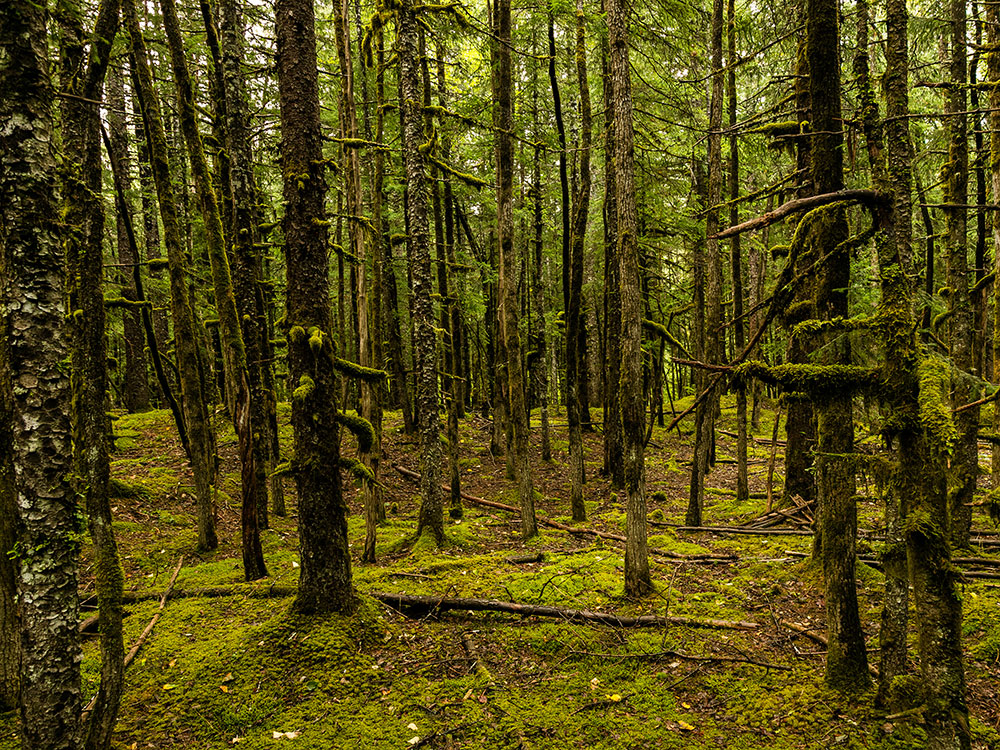
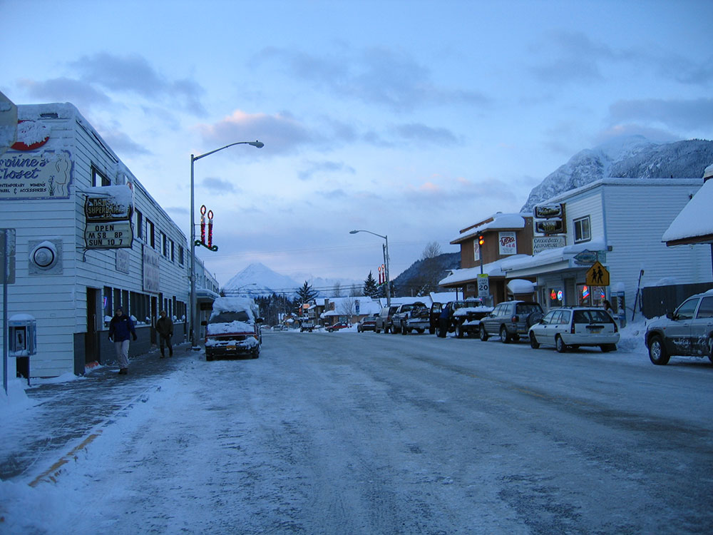
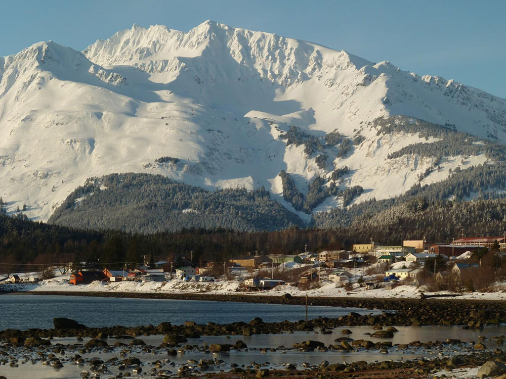
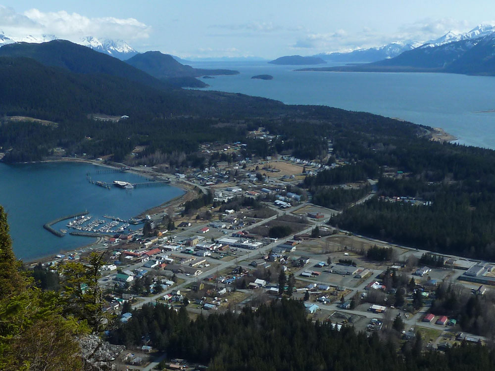

Scenic Alaska Inside Passage town known for mountain views, outdoor adventure, and one of the world’s largest gatherings of bald eagles.
General Information
Skagway (nearby, via ferry)
How to Get There
From Juneau (~75 mi): Travel by Alaska Marine Highway ferry or small aircraft; Haines is also accessible by road via the Haines Highway connecting to Canada.
Overview
Haines is a small town in the Chilkat Valley of Southeast Alaska, at the northern end of the Lynn Canal, and it is known for its dramatic mountain setting, its large community of artists, and the world's largest gathering of bald eagles. Every fall, thousands of eagles gather along the Chilkat River to feed on a late run of salmon, at the Alaska Chilkat Bald Eagle Preserve. Unlike its neighbor Skagway, Haines is reached by road from Canada, and it is a quieter, less touristy destination.
Visitors come to Haines for the bald eagle gathering in November, for the American Bald Eagle Foundation's museum, and for the Alaska Indian Arts center at Fort William H. Seward. They also come for hiking, fishing, kayaking, and rafting on the Chilkat River, and for the Southeast Alaska State Fair in August.
History
The Tlingit Chilkat and Chilkoot people have lived in the valley for thousands of years, and they controlled trade routes into the interior. In 1881, a Presbyterian mission, led by S. Hall Young and the naturalist John Muir, was set up at the site of present-day Haines, and a cannery followed. The U.S. Army built Fort William H. Seward in 1902 and stayed until 1947, and the buildings on the parade ground have been converted to shops, artists' studios, and lodging. The Haines Highway, built in World War II, connects the town to the Alaska Highway in Yukon, and in 1982 the Alaska Chilkat Bald Eagle Preserve was created.
Sightseeing and Popular Landmarks
Fort William H. Seward, a National Historic Landmark, has white officers' quarters around a grassy parade ground, and now houses Alaska Indian Arts, a Tlingit carving center, and the Chilkat Center for the Arts. The American Bald Eagle Foundation has a collection of mounted birds and a natural history museum, and the Sheldon Museum and Cultural Center shows the area's history. Chilkoot Lake, with salmon and brown bears, is a short drive, and the Haines Highway has views of the Chilkat Mountains.
Culture and Museums
Haines has a lively arts community, with Tlingit master carvers at Alaska Indian Arts and the Jilkaat Kwaan Heritage Center in Klukwan, which holds the famous Whale House carvings. The Sheldon Museum has a collection of Chilkat blankets, and the Southeast Alaska State Fair features music, crafts, and a parade. The Alaska Bald Eagle Festival is held each November, and the Great Alaska Craft Beer & Home Brew Festival in May is another popular event.
Parks
The Alaska Chilkat Bald Eagle Preserve protects 48,000 acres along the Chilkat River, where up to 3,000 eagles gather from October to February, and Chilkat State Park offers trails and views of glaciers and Lynn Canal. Mount Ripinski has a steep hike to a view, and Chilkoot Lake State Recreation Site has camping and fishing. The Chilkat River is popular for rafting and fishing, and the Haines Highway passes through Tatshenshini-Alsek Provincial Park in British Columbia.
Seasons and Weather
Haines has a maritime climate that is drier than other parts of Southeast Alaska. Summers are mild, with highs in the 60s°F, and winters are cold, with highs in the 20s and 30s°F and about 100 inches of snow. Summer is the busiest season, with eagle viewing in late fall, and many businesses close in winter.
Things to Do
Discover Alaska's Adventure Capital
Nestled between the towering Coast Mountains and the deep waters of Lynn Canal, Haines is one of Southeast Alaska's most scenic communities. Known for its abundant wildlife, outdoor recreation, Native culture, and Gold Rush-era history, Haines offers a quieter and more authentic Alaska experience than many larger cruise destinations.
Visit the Alaska Chilkat Bald Eagle Preserve
Haines is world-famous for its bald eagle population. The nearby Alaska Chilkat Bald Eagle Preserve protects critical habitat along the Chilkat River and hosts one of the largest concentrations of bald eagles in the world. Wildlife enthusiasts can observe eagles year-round, with especially impressive gatherings occurring during the late fall salmon runs.
Explore Fort William H. Seward
Established in 1902, Fort William H. Seward was one of Alaska's first permanent U.S. Army installations. Today the historic district contains restored military buildings, galleries, museums, restaurants, and waterfront views, making it one of Haines' most popular places to explore.
Experience Exceptional Wildlife Viewing
The Haines area is known for its incredible wildlife. Visitors frequently encounter bald eagles, brown bears, black bears, moose, mountain goats, seals, sea lions, and whales. Guided wildlife tours throughout the Chilkat Valley and nearby waterways provide excellent opportunities to view these animals in their natural habitats.
Kayak Chilkoot Lake and Lynn Canal
Kayaking is one of the most popular activities in Haines. Paddlers can explore the calm waters of Chilkoot Lake, coastal areas along Lynn Canal, and nearby inlets while enjoying spectacular mountain scenery and opportunities to observe wildlife along the shore.
Visit the Hammer Museum
Haines is home to the world's first museum dedicated entirely to hammers. The Hammer Museum features thousands of hammers from different cultures, professions, and historical periods, offering a fun and uniquely Alaskan attraction in the center of town.
Learn About Native and Regional History
Visitors can explore local museums and cultural centers that highlight the history of the Tlingit people, early explorers, mining activity, military history, and the development of Southeast Alaska communities.
Take a Scenic River Float Trip
The Chilkat River system offers outstanding rafting and float-trip opportunities. These excursions provide access to remote wilderness scenery while giving visitors chances to spot bears, eagles, salmon, and other wildlife throughout the river valley.
Top Trails
Mount Ripinsky Trail
Length: Approximately 7 miles round trip
Elevation Gain: Approximately 3,500 feet
Difficulty: Strenuous
One of the area's signature hikes, Mount Ripinsky rewards hikers with spectacular views of Haines, Lynn Canal, the Chilkat Valley, and the surrounding mountains. The challenging climb is popular among experienced hikers seeking panoramic scenery.
Battery Point Trail
Length: Approximately 2 miles round trip
Elevation Gain: Minimal
Difficulty: Easy
This easy coastal trail follows the shoreline north of town and offers beautiful views of Lynn Canal, nearby islands, and snow-covered peaks. The route is popular for walking, birdwatching, and photography.
Mount Riley Trail
Length: Approximately 4 miles round trip
Elevation Gain: Approximately 1,500 feet
Difficulty: Moderate
Located near Chilkoot Lake, this scenic trail climbs to viewpoints overlooking Lutak Inlet, Chilkoot Lake, and surrounding mountains. Wildlife sightings are common, and the summit offers excellent opportunities for photography.
This article uses material from Wikipedia as well as information from official tourism and institutional sources. Key references include Haines Convention & Visitors Bureau, American Bald Eagle Foundation, Sheldon Museum and Cultural Center, Travel Alaska, and National Weather Service Juneau. Wikipedia material is from the article "Haines, Alaska", and is available under the Creative Commons Attribution-Share-Alike License 3.0.






